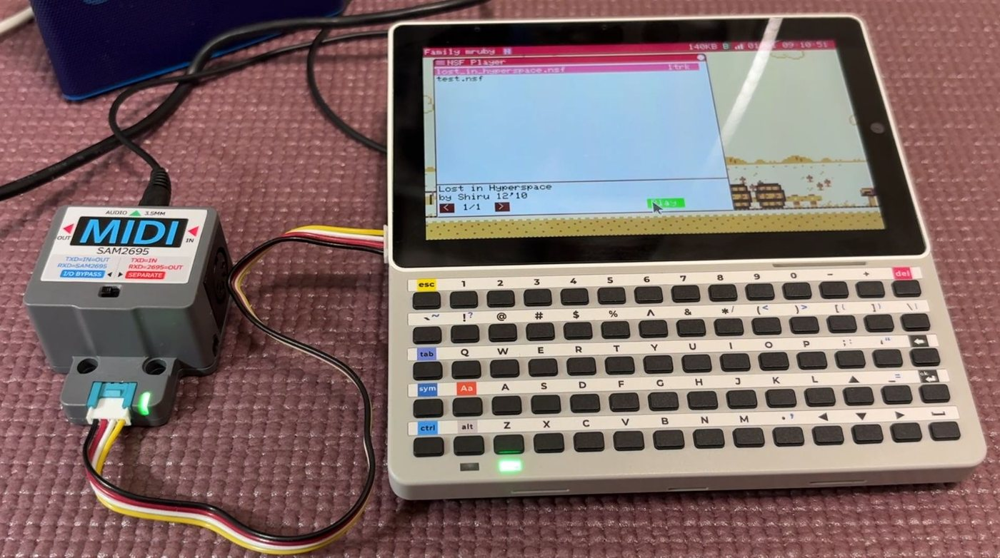

MIDI (MIDI::Device / FmrbMidi)¶
2.0 で追加。Family mruby は鳴らさせる側、つまり MIDI を送る制御機として振る舞います。
音を出すのは、本体の APU 音源でも、GROVE 端子につないだ外部音源でもかまいません。
どちらも同じ MIDI::Device の後ろにいるので、同じアプリのコードで両方を鳴らせます。
両機種で使えます。
device = FmrbMidi.device(self) # 内蔵 APU
device.note_on(1, 60, 100) # チャンネル、音番号、強さ
device.note_off(1, 60)
この層は Midori の MIDI gem から取り込んだもので、
MIDI::Device の API はその gem が定めているものです。
音の出口は 2 つ¶
内蔵 APU¶
def on_create
@device = FmrbMidi.device(self)
end
def on_update
FmrbMidi.tick # 予約された note off を処理する。毎回呼びます
end
音はファミコン風 APU のチャンネルに割り当てられます。矩形波 2、三角波 1、雑音 1 の 4 声なので、和音を鳴らすとすぐ埋まります。どの MIDI チャンネルをどの声に載せるかは 割り当て表で決まります。
GROVE 端子から外部の音源へ¶
device = FmrbMidi.serial_device(tx: 53) # 素のシリアル MIDI 出力
device = FmrbMidi.sam2695_device(tx: 53) # M5Stack Unit MIDI。初期化まで済ませて返します
端子が開けないときは (I2C で既に使われている場合など) どちらも nil を返すので、
使う前に確認してください。
@device = FmrbMidi.sam2695_device(tx: 53)
if @device.nil?
Log.warn("no MIDI port")
@device = FmrbMidi.device(self) # 内蔵 APU に切り替える
end
シリアル MIDI は MIDI 規格どおり 31250 bps です。ピンは基板によって違います。
| 機種 | MIDI 送信に使う GROVE のピン |
|---|---|
| Modern (Tab5) | GPIO 53 |
| Retro (narya-board) | GPIO 47 (GROVE 2) |
tx = FmrbConst::BOARD == "tab5" ? 53 : 47
外部音源としては M5Stack Unit MIDI (SAM2695) を基準にしています。GM 音源で、GROVE ケーブル 1 本でつながります (GROVE 2 から 5V を供給できます)。

上の写真は、SMF プレイヤーのアプリから GROVE 経由で Unit MIDI を鳴らし、モジュールの 音声出力をスピーカーにつないだところです。
標準 MIDI ファイルを鳴らす¶
player = FmrbMidi::SmfPlayer.new(@device)
player.load("/usr/share/sounds/midi/song.mid")
player.play
def on_update
player.tick
FmrbMidi.tick
end
終わったかどうかは player.playing?、途中で止めるのは player.stop です (鳴りっぱなしの
音は消してくれます)。
同梱の曲は /usr/share/sounds/midi にあります。SMF Player
(/app/tool/smf_player.app.rb) はファイルを選んで鳴らせる完成品なので、読むのにも使うのにも
向いています。
MML¶
ファイルではなく文字列で書いた曲を鳴らす場合です。
@device = FmrbMidi.device(self)
@player = FmrbMidi::MmlPlayer.new(@device)
@player.bpm = 120
@player.load_string("o4 l8 crdrerfrgrarbr>cr")
@player.play
複数の文字列を渡すと、それらが 1 つの曲に合わさって同時に鳴ります。
演奏の間隔はアプリの更新処理から取っているのではありません。演奏側は「何マイクロ秒に 出す」という印をつけた命令を C の層に渡し、時計がその時刻に VM を通さず送り出します。 だからアプリが忙しくても拍が崩れません。
MML のデモ (/app/demo/mml.app.rb) は、同じ曲を内蔵 APU と外部音源のどちらでも
鳴らせて、動作中に切り替えられます。
この MML は BASIC の MML とは別物です
FMRuby BASIC には Family BASIC 互換の PLAY 文があります。これは別の実装で、書き方も
同じではありません。BASIC と MicroPython を参照してください。
出ているものを確かめる¶
開発時には、リポジトリの tools/fmrb_midi_monitor.rb がシリアル端子から出るバイトを
到着時刻つきで表示します。
note on ch1 C4 vel=100 [90 3C 64]
到着時刻が分かるので、聴いて判断するより正確に拍や音符の間隔を測れます。パソコン側の ソフト音源に流して、機材なしで実際に鳴らすこともできます。
負荷について¶
シリアル経路では、1 音送るのにメモリを一切確保しません。だから演奏中に GC が割り込んで 曲が止まることがありません。自分のコードでも同じにしてください。必要な文字列や配列は、 音を出す繰り返しの中ではなく、読み込み時に一度だけ作ります。
関連¶
- FmrbAudio — MIDI を挟まず APU を直接叩く
- 音声ファイルフォーマット — 内蔵の音楽形式 FMSQ
- ハードウェア — 各機種の GROVE ピン
- 標準アプリ — SMF Player、MIDI APU、MML